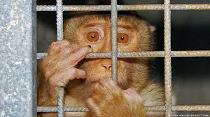

La
experimentación en animles, ¿correcta o incorrecta?
14/11/21
¿Cuáles son los beneficios de la experimentación?
La investigación con animales ha desempeñado un papel fundamental en casi cada uno de los
descubrimientos médicos de la última década.
Casi todos los galardonados con el premio Nobel de medicina o fisiología desde 1901 han
basado parte de sus estudios en datos obtenidos con el uso de animales.
Compartimos el 95% de los genes con el ratón, lo que lo convierte en un modelo cercano al
cuerpo humano.
Los animales y los humanos somos muy parecidos; estamos dotados de los mismos órganos que
desempeñan las mismas funciones de una manera similar.
Los animales sufren enfermedades similares a los humanos, incluyendo el cáncer, la
tuberculosis, la gripe y el asma.

Mono encarcelado
Peta y más
informacion
1/12/21
Usos de la experimentación animal
Gracias a la experimentación animal, principalmente en ratones, las tasas de
supervivencia del cáncer ha aumentado.
Trastuzumab (herzeptin) una proteína de ratón humanizada, ha ayudado a aumentar la tasa
de supervivencia de los enfermos de cáncer. No se podría haber obtenido sin las
investigaciones sobre ratones.
Gracias la experimentación animal se han desarrollado terapias con Anti-retrovirales
Altamente Activos (HAART) por los cuales el SIDA ha dejado de ser la condena a muerte
que era hace 30 años.
Si bien Fleming descubrió la penicilina sin usar animales, compartió el Premio Nobel con
Florey y Chain quienes, experimentando en ratones, descubrieron que podía usarse para
combatir infecciones.
La investigación animal ha permitido desarrollar inhaladores para el asma. El asma mata
200.000 personas cada año.
La experimentación animal ha ayudado a desarrollar vacunas, como por ejemplo contra la
polio, tuberculosis, meningitis y, recientemente, el papilomavirus humano (PVH) el cual
está relacionado con el cáncer de cervix.
El desarrollo del Tamoxifeno mediante experimentación animal ha hecho descender un 30%
la tasa de mortalidad debido a cáncer de mama en los años 90.
La insulina ha sido desarrollada gracias a la experimentación en conejos y perros. En
España cada año hay 4000 nuevos diabéticos tipo.
La viruela ha sido erradicada de la Tierra gracias a la experimentación animal.
Las técnicas in vitro y los modelos computerizados complementa a los modelos animales.
Imagen real.
Consciencia Social sobre el caso
9/02/22
Save ralph, un video sobre conciencia social.
El cortometraje Save Ralph, estrenado el 6 de abril, se hizo viral debido a la forma como
mostraba la vida de un conejo usado en testeo con fines cosméticos. A partir de la
antropomorfización de este conejo se generó una empatía en la que nos proyectamos en la
rutina de Ralph, sentimos su dolor, sufrimiento e incluso su resignación con la vida que le
tocó.
La exposición del sufrimiento de los animales usados en experimentación (cosmética,
científica o académica) no es nueva. Desde hace décadas es bien sabido lo que viven en los
laboratorios. Pero este cortometraje tuvo una gran acogida debido a que la vida de Ralph nos
recordó cómo hemos llegado a normalizar la explotación animal, en este caso, para el testeo
cosmético
Aunque se puede discutir qué tan fiel a la realidad es el video de Save Ralph, vemos el
oxímoron de las leyes que, en general, hablan de ‘experimentación animal’ y ‘buen trato’.
Luego de un procedimiento y como parte de los protocolos que aseguran su bienestar y cuidado
en medio de prácticas que acortan sus vidas y los dañan con una crueldad inimaginable, estos
animales son “sacrificados”, el eufemismo clásico del asesinato.
Una de las ideas tradicionales sobre el uso y “sacrificio” de estos animales es que los
podemos utilizar como necesitemos porque los producimos, en este caso para obtener productos
que no nos dañen y medicamentos. Así lo vimos con Ralph, quien señala que cumple la misma
labor que sus antepasados y que morirá igual que ellos por el bien de seres superiores como
los seres humanos.
investigación
9/02/22
Pruebas con humanos
Podría argumentar que "Sí, los animales tienen características similares a las nuestras,
entonces, ¿por qué no prueban en humanos?" Hay una razón para eso, e incluye que el
ciclo de
vida de un animal es más corto que el de una vida humana; por lo tanto podemos ver las
consecuencias a largo plazo que algo tiene sobre la salud o en aspectos
psicológicos. En un
estudio realizado con metilfenidato sobre el desarrollo del cerebro, o en términos simples, un
estudio realizado para ver los efectos del metilfenidato (medicamento elaborado para tratar el
déficit de atención/TDAH) en el cerebro de un niño o un adolescente, usaron jerbos en un cerebro
en desarrollo. para ver si a largo plazo tenían efectos secundarios en su cerebro en desarrollo
y crecimiento, pero el estudio mostró que los jerbos tenían una mejora en el enfoque y ningún
otro efecto secundario después de eso;1 mostrando así que la corta vida de un jerbo
puede mostrar
los efectos a largo plazo de un tratamiento contra un problema psicológico. En una prueba en
humanos, no se pudo ver el efecto que este tratamiento podría tener en el cerebro en desarrollo
de un bebé.
Similitudes entre humanos y animales
La mayoría de los animales en los que prueban comparten características y ADN comunes con
nuestra
especie; por lo tanto, si los prueban, nos puede beneficiar de muchas maneras.Uno de los animales en los que prueban son los ratones y comparten el 98% del ADN con
nosotros.2
En
2015,
los ratones representaron el 61 % de los procedimientos en el Reino Unido3; por lo
tanto, más de
la mitad de los procedimientos se realizaron en ratones, lo que significa que de ese 61%
sirvieron para beneficio humano. No solo los ratones comparten nuestras similitudes biológicas,
en las mismas estadísticas, el 84% de los animales como primates, caballos, peces, aves y otras
especies se utilizaron para la salud humana, el 8% se utilizó para enfermedades y bienestar, el
7% sirvió para toxicología no reglamentaria. pruebas y 0,8% para diagnóstico de
enfermedades.4
Demostrando que si no compartiéramos similitudes comunes no tendríamos esos porcentajes que
sirven para nuestro propio beneficio.
Porcentaje de animales usados para la salud humana.
Un descubrimiento científico aportado por la experimentación
de los avances más fascinantes que nos llevó la experimentación con animales fue
el
descubrimiento de un nuevo tratamiento para un defecto traqueal que en una breve
explicación
es que algunas personas nacen con inflamación en la tráquea haciendo que esta parte
sea
suave y descuidada, pero esto hace que la área traqueal para comenzar a hacer
tumores. En 2004, un experimento realizado en perros sobre el reemplazo de
un
defecto traqueal con una prótesis de ingeniería de tejidos mostró que “Los animales
recuperaron
la actividad completa y sobrevivieron con actividad normal. La broncoscopia a la semana
y al mes
y a los 2 meses no reveló estenosis en la anastomosis.” Lo que significa que el
experimento fue
exitoso y que este nuevo tratamiento podría funcionar en humanos que nacen con este
defecto. El
estudio también aclara que siguieron la “Guía para el cuidado y uso de animales de
laboratorio”.
En el que manifiestan el uso adecuado de los animales en investigación, y se preocupan
por la
seguridad y atención que les dan a los animales.
2Stanford Medicine (2019). Why Animal Research? [online] Animal
Research at
Stanford.
3 y 4 UK Government (2016). Annual Statistics of Scientific
Procedures on
Living
Animals
Great
Britain
2015.
Peta (2017). Experiments on Animals: Overview subhead Animal Experiments Are
Wasteful
and
Unreliable paragraph 1.
1Grund, T., Lehmann, K., Bock, N., Rothenberger, A. and
Teuchert-Noodt, G.
(2006).
Influence
of methylphenidate on brain development – an update of recent animal
experiments.
Behavioral
and
Brain Functions, 2(1)
www.brighamandwomens.org. (n.d.). Tracheal Disorders - Brigham and Women’s
Hospital
Kim, J., Suh, S.W., Shin, J.Y., Kim, J.H., Choi, Y.S. and Kim, H. (2004).
Replacement
of a
tracheal defect with a tissue-engineered prosthesis: Early results from animal
experiments.
The
Journal of Thoracic and Cardiovascular Surgery, [online] 128(1), pp.124–129.
NIH/OD/OER/OLAW (2010). Guide for the Care and Use of Laboratory Animals, 8th
edition.
National Academies Press.
Video estructurado por mi
17/02/22
Video Informativo
En el siguiente video, trate de dar una explicación más a detalle sobre el Tema a demás de
dar unas propuestas que organizaciones tienen respecto al tema
Meme
17/02/22
Un contenido menos serio
hablando de cosas serias es necesario aveces reir de algo
 Peta y más
informacion
Peta y más
informacion

 10 cosas para más información
10 cosas para más información